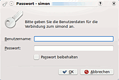
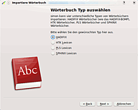
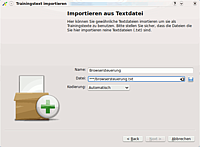
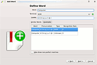
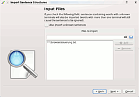
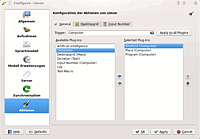
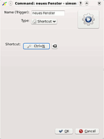
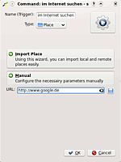
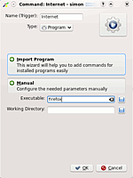

Simon
Dieser Artikel wurde für die folgenden Ubuntu-Versionen getestet:
Ubuntu 16.04 Xenial Xerus
Zum Verständnis dieses Artikels sind folgende Seiten hilfreich:
simon  ist eine Open-Source-Spracherkennungssoftware, die es ermöglicht, Maus und Tastatur durch akustische Signale zu ersetzen. Das Programm kann sehr flexibel gestaltet werden und ermöglicht deshalb Spezialanfertigungen für jedwede Anwendung, bei der Spracherkennung benötigt wird. Simon ermöglicht z.B. Menschen mit körperlichen/motorischen Beeinträchtigungen die Nutzung von Chats, Mailverkehr, Internetsurfen, Schriftverkehr, E-Government, Netbanking etc., auf die sie ggf. sonst nur schwer Zugriff hätten.
ist eine Open-Source-Spracherkennungssoftware, die es ermöglicht, Maus und Tastatur durch akustische Signale zu ersetzen. Das Programm kann sehr flexibel gestaltet werden und ermöglicht deshalb Spezialanfertigungen für jedwede Anwendung, bei der Spracherkennung benötigt wird. Simon ermöglicht z.B. Menschen mit körperlichen/motorischen Beeinträchtigungen die Nutzung von Chats, Mailverkehr, Internetsurfen, Schriftverkehr, E-Government, Netbanking etc., auf die sie ggf. sonst nur schwer Zugriff hätten.
Ein kleine Auswahl der unterstützten Funktionen:
Sprachsteuerung von Programmen, Tastenkombination, Befehlen ...
Spezialanpassung möglich
Installation¶
Um simon nutzen zu können, werden zwei Programme benötigt. Das Grundprogramm ist in den Quellen vorhanden:
simon
 mit apturl
mit apturl
Paketliste zum Kopieren:
sudo apt-get install simon
sudo aptitude install simon
Installation von HTK¶
simon benötigt das HTK Toolkit  , um das Sprachmodell zu generieren. Obwohl HTK gratis ist, kann es wegen Lizenzbestimmungen nicht frei weitergeben werden. Da für Linux nur der Quellcode und keine Binärpakete zur Verfügung stehen, muss man HTK selbst kompilieren. Man kann sich kostenlos registrieren, indem man dieses Formular ausfüllt und abschickt. Nach kurzer Zeit erhält man eine E-Mail mit dem persönlichen HTK-Passwort zugesandt. Man kann nun den HTK-Quellcode
, um das Sprachmodell zu generieren. Obwohl HTK gratis ist, kann es wegen Lizenzbestimmungen nicht frei weitergeben werden. Da für Linux nur der Quellcode und keine Binärpakete zur Verfügung stehen, muss man HTK selbst kompilieren. Man kann sich kostenlos registrieren, indem man dieses Formular ausfüllt und abschickt. Nach kurzer Zeit erhält man eine E-Mail mit dem persönlichen HTK-Passwort zugesandt. Man kann nun den HTK-Quellcode  herunterladen.
herunterladen.
Bevor man HTK installieren kann, müssen zunächst folgenden Pakete installiert werden:
libx11-dev
libasound2-dev
mit apturl
Paketliste zum Kopieren:
sudo apt-get install libx11-dev libasound2-dev
sudo aptitude install libx11-dev libasound2-dev
Das Programm ist für 32-Bit-Systeme konzipiert, die Erstellung und Nutzung unter 64-bit-Systemen ist zwar möglich, zieht aber etliche Pakete in 32-Bit-Version nach sich, die als Abhängigkeiten der folgenden Pakete mitinstalliert werden:
libx11-dev:i386
libc6-dev-i386
gcc-multilib
mit apturl
Paketliste zum Kopieren:
sudo apt-get install libx11-dev:i386 libc6-dev-i386 gcc-multilib
sudo aptitude install libx11-dev:i386 libc6-dev-i386 gcc-multilib
Zudem muss im Terminal eine symbolische Verknüpfung erstellt werden, weil sonst eine benötigte Bibliothek nicht gefunden wird:
sudo ln -s /usr/lib/i386-linux-gnu/libX11.so.6.3.0 /usr/lib32/libX11.so
Dann kann das HTK-Archiv entpackt [3] werden. Leider beinhaltet das makefile in htk/HLMTools einen "Fehler"; ggf. müssen zunächst im Zeile 77 in einem Editor[2] die 8 Leerstellen am Anfang der Zeile durch einen TAB-Stop ersetzt werden. Erst dann kann kompiliert [4] werden (Hinweise zur Installation in der beiliegenden README-Datei).
simon starten¶
Man startet simon und ksimond im KDE-Menu unter:
"Programme -> Dienstprogramme -> simon (Spracherkennung)" bzw. "ksimond (Ein KDE Front-End für simond)"
Unter Unity z.b: über die Dash,
"simon" bzw. "ksimond"
In der Taskleiste ist nun ein weißes Oval zu finden. Klickt man auf das Symbol, so öffnet sich die Konfiguration von ksimond.

Hier wechselt man auf "Benutzer", und klickt auf "Hinzufügen". Man vergibt nun eine beliebige Benutzername/Passwort Kombination. Man verbindet sich jetzt zum simond Server, indem man auf "Verbinden" klickt, und gibt die selbe Benutzername / Passwort Kombination erneut an.
Benutzung¶
Bevor man simon benutzen kann, muss es erst eingerichtet werden. Beim ersten Start öffnet sich automatisch ein Einrichtungsassistent.
Hinweis:
Da die Einrichtung die hier möglichen Grenzen weit überschreitet, wird hier nur ein Beispiel-Projekt genannt.
Exemplarisch wird die Einrichtung einer Browsersteuerung beschrieben. Dazu braucht man:
ein Wörterbuch
einen Trainingstext
die passende Grammatik
und einige Kommandos
Wörterbuch¶
Damit simon Wörter verwalten kann, benötigt es ein Wörterbuch, z.B. das HADIFIX-BOMP Wörterbuch der Uni Bonn. Dieses ist zwar gratis und wird von Simon heruntergeladen. Dazu müssen aber - für statistische Zwecke - E-Mail-Adresse und Name angegeben werden.

Dazu klickt man im simon-Menü auf "Wörterliste". Nun öffnet sich ein neuer Reiter, in dem sich die Taste "Wörterbuch importieren" befindet, diese klickt man an. Jetzt öffnet sich der Manager zum Importieren von Wörterbüchern. Hier wählt man den Punkt "HADIFIX" aus. Als nächstes muss der Punkt "Das HADIFIX BOMP automatisch herunterladen und installieren" ausgewählt werden.
Training¶
Nachdem das Wörterbuch jetzt erfolgreich importiert ist, kommt man zum Trainingstext. Für das Beispiel öffnet man einen Texteditor[5] und erstellt eine neue Textdatei namens browsersteuerung.txt mit folgendem Inhalt:

Computer, Internet. Computer, im Internet suchen. Computer, neues Fenster
Jetzt klickt man im Hauptmenü auf "Training", In diesem Reiter werden die Trainingstexte aufgelistet, die bereits vorhanden sind. Da ein eigener Text trainiert werden soll, klickt man auf "Text importieren", nun öffnet sich der Assistent zum Importieren von Texten. Das Programm kann Texte vom Internet herunterladen, und "lokale Texte importieren", letzteres wählt man aus.
Als Name gibt man "Browsersteuerung" ein, und wählt den eben erstellten Text browsersteuerung.txt aus.

Um den Text zu trainieren, wählt man den Text aus und klickt auf "Training starten". Die Frage, ob diese Wörter hinzugefügt werden sollen, bestätigt man mit "JA". Der Manager zum Hinzufügen von Wörtern erscheint.
Experten-Info:
Erklärung der Felder:
Im ersten Feld steht das Wort, das hinzugefügt werden soll, z.B. "Computer".
Im zweiten Feld wird das "Terminal", die Wortart, definiert. So ist z.B. das Wort "Computer" ein Nomen. Im Feld Terminal wird automatisch "NOM" eingetragen.
Im dritten Feld steht die "SAMPA-Notation". Diese benötigt simon, um die richtige Aussprache des Wortes zu erkennen.
Im untersten Feld stehen Vorschläge aus dem importierten Wörterbuch.
simon macht Vorschläge zum Ausfüllen der Felder, die meistens so gut sind, dass sie gleich übernommen werden können. Man muss also nur auf "weiter >" klicken. Nun folgen zwei Aufnahmen des Wortes, die man hintereinander durchführt.
Hinweis:
Man sollte laut und deutlich, aber nicht überbetont sprechen!
 Man führt diesen Vorgang nun mit allen Wörtern durch. Nachdem diese Wörter bekannt sind, kann man den Text "Browsersteuerung" jetzt trainieren, dazu folgt man den Anweisungen des Assistenten.
Grammatik¶
Damit die trainierten Befehle verwenden werden können, benötigt man die passende Grammatik. Dazu klickt man im simon-Hauptmenü auf "Grammatik -> Text importieren". Im Manager wählt man die Datei browsersteuerung.txt aus und importiert diese.
Kommandos¶
 Das Programm könnte nun Befehle empfangen, aber es würde nichts passieren, da man erst passende Kommandos erstellen muss. Dazu navigiert man zu "Einstellungen -> simon konfigurieren -> Aktionen". Hier fügt man die Punkte:
Tastenkürzel
Ort
Programm
zur rechten Liste hinzu. Nun tippt man im Textfeld "Trigger" das Wort "Computer" ein und klickt auf "für alle Plugins verwenden". Im Hauptmenü wechselt man zum Reiter "Kommandos" und fügt mit der Taste "Neues Kommando" folgende Kommandos nacheinander hinzu:
|  |
| neues Fenster |
|  |
| im Internet suchen |
|  |
| internet |
Test¶
Jetzt kann der Test erfolgen. Dazu klickt man im Hauptmenü auf "Synchronisieren" und danach auf "Aktivieren". Nun sollte in einem Fenster die Nachricht: "simon ist jetzt aktiviert" erscheinen. Man spricht das Kommando:
"Computer, Internet" um den Browser zu öffnen.
"Computer, im Internet suchen" um Google zu öffnen.
"Computer, neues Fenster" um ein neues Browserfenster zu öffnen.
Da Erkennen der Befehle funktioniert ggf. nicht beim ersten Versuch, das braucht eine gewisse Zeit. Man spricht sie einfach ein paar mal, wenn es trotzdem nicht funktioniert, trainiert man den Text "Browsersteuerung" noch einmal und versucht es erneut.
Problembehebung¶
Beim Training kann es vorkommen, dass sich der gesprochene Text ungenügend vom Hintergrundrauschen abhebt. Es wird eine entsprechende Warnung angezeigt und empfohlen, das Wort erneut zu sprechen. In diesem Fall sollte man sicherstellen, dass die Mikrofon-Verstärkung unter "System -> Einstellungen -> Klang -> Eingabe" nicht aktiviert ist. Stattdessen sollte die Lautstärke direkt am Mikrofon erhöht werden. Oft hilft es, andere, höherwertige Mikrofone (mit Rauschunterdrückung) auszuprobieren.
- Erstellt mit Inyoka
-
 2004 – 2017 ubuntuusers.de • Einige Rechte vorbehalten
2004 – 2017 ubuntuusers.de • Einige Rechte vorbehalten
Lizenz • Kontakt • Datenschutz • Impressum • Serverstatus -
Serverhousing gespendet von